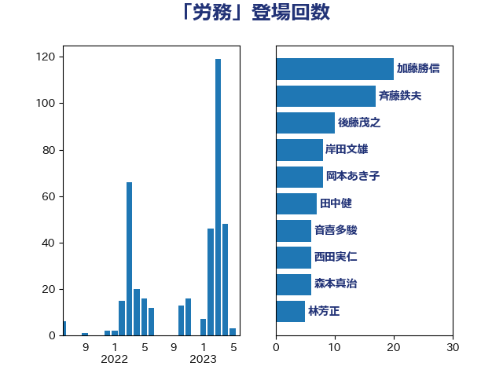

単語「労務」

| 加藤勝信 | 自由民主党 | 20 回 |
| 斉藤鉄夫 | 公明党 | 17 回 |
| 後藤茂之 | 自由民主党 | 10 回 |
| 岸田文雄 | 自由民主党 | 8 回 |
| 岡本あき子 | 立憲民主党 | 8 回 |
| 田中健 | 国民民主党 | 7 回 |
| 音喜多駿 | 日本維新の会 | 6 回 |
| 西田実仁 | 公明党 | 6 回 |
| 森本真治 | 立憲民主党 | 6 回 |
| 林芳正 | 自由民主党 | 5 回 |
| 宮崎政久 | 自由民主党 | 5 回 |
| 伊藤渉 | 公明党 | 5 回 |
| 西村康稔 | 自由民主党 | 4 回 |
| 石川香織 | 立憲民主党 | 4 回 |
| 漆間譲司 | 日本維新の会 | 4 回 |
| 天畠大輔 | れいわ新選組 | 4 回 |
| おおつき紅葉 | 立憲民主党 | 4 回 |
| 鈴木俊一 | 自由民主党 | 3 回 |
| 村田享子 | 立憲民主党 | 3 回 |
| 木村次郎 | 自由民主党 | 3 回 |
| 早稲田ゆき | 立憲民主党 | 3 回 |
| 寺田稔 | 自由民主党 | 3 回 |
| 上田清司 | 国民民主党 | 3 回 |
| 齋藤健 | 自由民主党 | 2 回 |
| 鬼木誠 | 立憲民主党 | 2 回 |
| 高橋千鶴子 | 日本共産党 | 2 回 |
| 重徳和彦 | 立憲民主党 | 2 回 |
| 礒崎哲史 | 国民民主党 | 2 回 |
| 畦元将吾 | 自由民主党 | 2 回 |
| 田畑裕明 | 自由民主党 | 2 回 |
| 田村智子 | 日本共産党 | 2 回 |
| 浅野哲 | 国民民主党 | 2 回 |
| 泉健太 | 立憲民主党 | 2 回 |
| 松沢成文 | 日本維新の会 | 2 回 |
| 本村伸子 | 日本共産党 | 2 回 |
| 斎藤アレックス | 国民民主党 | 2 回 |
| 徳永久志 | 立憲民主党 | 2 回 |
| 山際大志郎 | 自由民主党 | 2 回 |
| 小倉將信 | 自由民主党 | 2 回 |
| 守島正 | 日本維新の会 | 2 回 |
| 加田裕之 | 自由民主党 | 2 回 |
| 上田勇 | 公明党 | 2 回 |
| 三浦信祐 | 公明党 | 2 回 |
| 鰐淵洋子 | 公明党 | 1 回 |
| 馬場成志 | 自由民主党 | 1 回 |
| 鈴木英敬 | 自由民主党 | 1 回 |
| 鈴木庸介 | 立憲民主党 | 1 回 |
| 野間健 | 立憲民主党 | 1 回 |
| 里見隆治 | 公明党 | 1 回 |
| 遠藤良太 | 日本維新の会 | 1 回 |
| 足立敏之 | 自由民主党 | 1 回 |
| 萩生田光一 | 自由民主党 | 1 回 |
| 芳賀道也 | 国民民主党 | 1 回 |
| 船橋利実 | 自由民主党 | 1 回 |
| 羽田次郎 | 立憲民主党 | 1 回 |
| 笠井亮 | 日本共産党 | 1 回 |
| 空本誠喜 | 日本維新の会 | 1 回 |
| 稲津久 | 公明党 | 1 回 |
| 福田昭夫 | 立憲民主党 | 1 回 |
| 福島伸享 | 無所属 | 1 回 |
| 石井正弘 | 自由民主党 | 1 回 |
| 熊田裕通 | 自由民主党 | 1 回 |
| 渡辺猛之 | 自由民主党 | 1 回 |
| 津島淳 | 自由民主党 | 1 回 |
| 沢田良 | 日本維新の会 | 1 回 |
| 永岡桂子 | 自由民主党 | 1 回 |
| 比嘉奈津美 | 自由民主党 | 1 回 |
| 森田俊和 | 立憲民主党 | 1 回 |
| 松本剛明 | 自由民主党 | 1 回 |
| 木原誠二 | 自由民主党 | 1 回 |
| 日下正喜 | 公明党 | 1 回 |
| 岸真紀子 | 立憲民主党 | 1 回 |
| 岬麻紀 | 日本維新の会 | 1 回 |
| 小田原潔 | 自由民主党 | 1 回 |
| 小沼巧 | 立憲民主党 | 1 回 |
| 小沢雅仁 | 立憲民主党 | 1 回 |
| 小林一大 | 自由民主党 | 1 回 |
| 小宮山泰子 | 立憲民主党 | 1 回 |
| 宮本徹 | 日本共産党 | 1 回 |
| 太栄志 | 立憲民主党 | 1 回 |
| 大島敦 | 立憲民主党 | 1 回 |
| 城内実 | 自由民主党 | 1 回 |
| 吉良よし子 | 日本共産党 | 1 回 |
| 吉田宣弘 | 公明党 | 1 回 |
| 古川禎久 | 自由民主党 | 1 回 |
| 友納理緒 | 自由民主党 | 1 回 |
| 加藤鮎子 | 自由民主党 | 1 回 |
| 伊藤達也 | 自由民主党 | 1 回 |
| 伊藤孝恵 | 国民民主党 | 1 回 |
| 中島克仁 | 立憲民主党 | 1 回 |
| 三木圭恵 | 日本維新の会 | 1 回 |